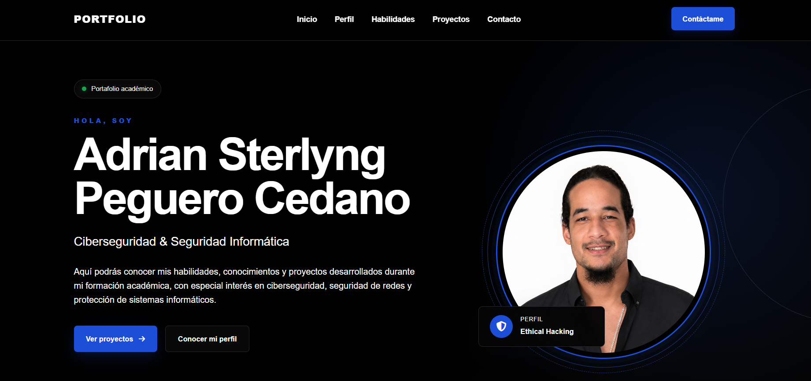

Aquí podrás conocer mis habilidades, conocimientos y proyectos desarrollados durante mi formación académica, con especial interés en ciberseguridad, seguridad de redes y protección de sistemas informáticos.
